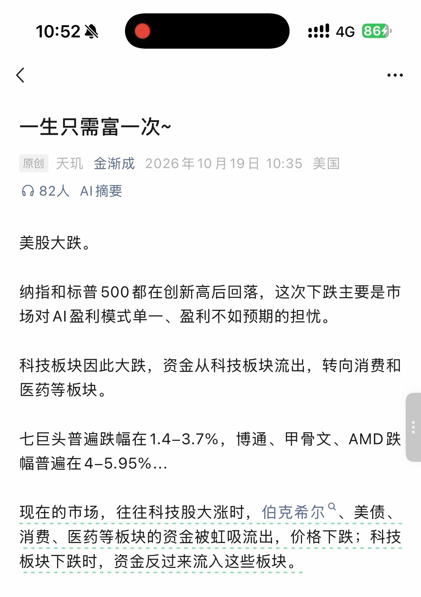
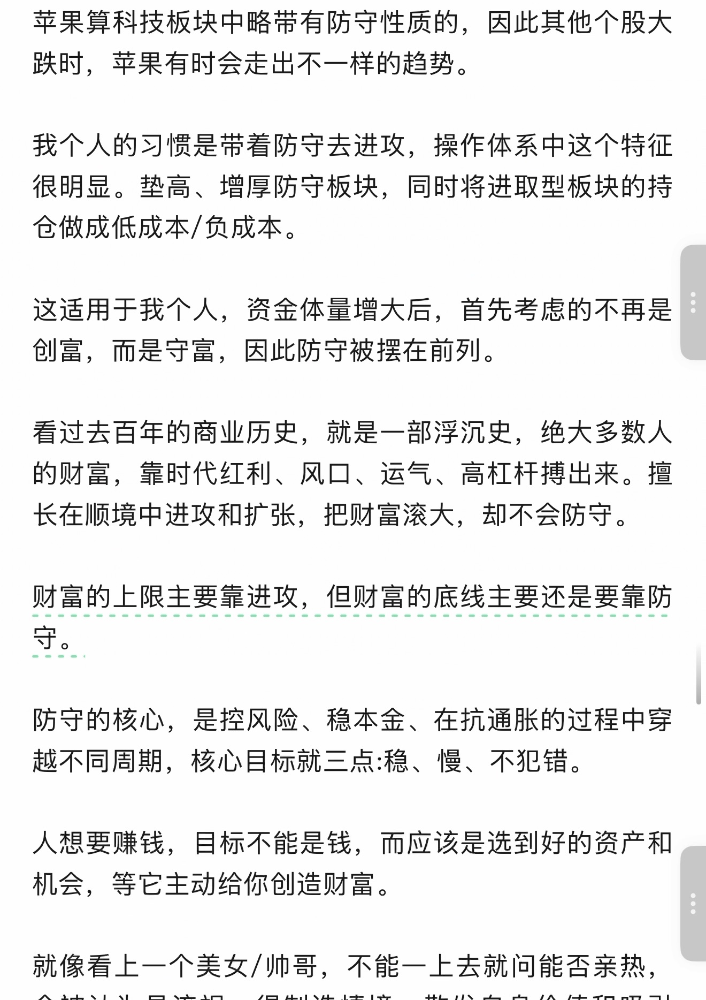
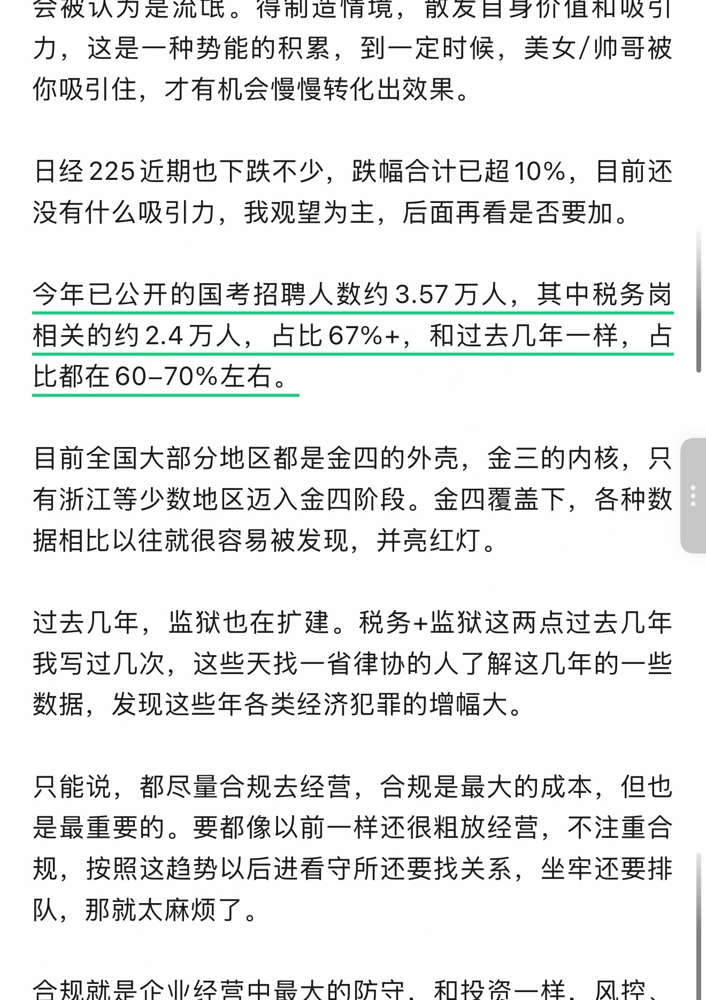
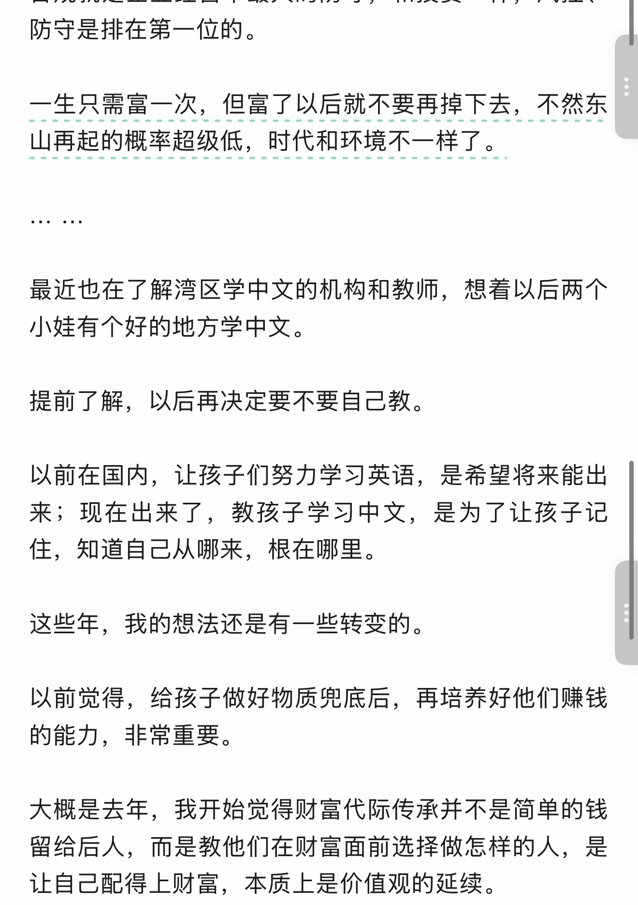
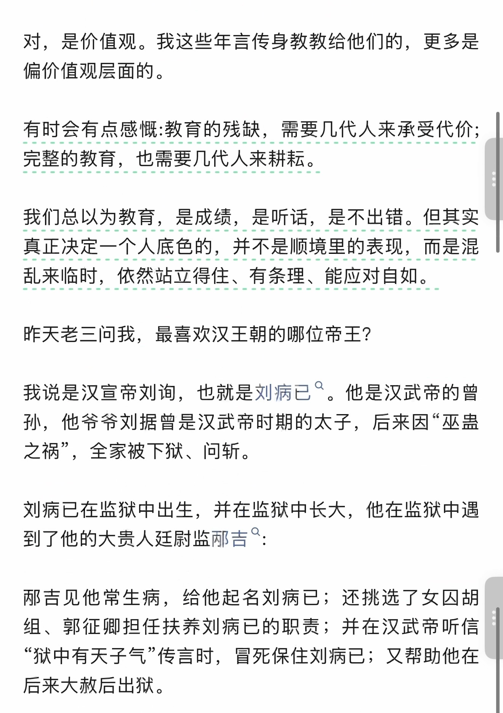
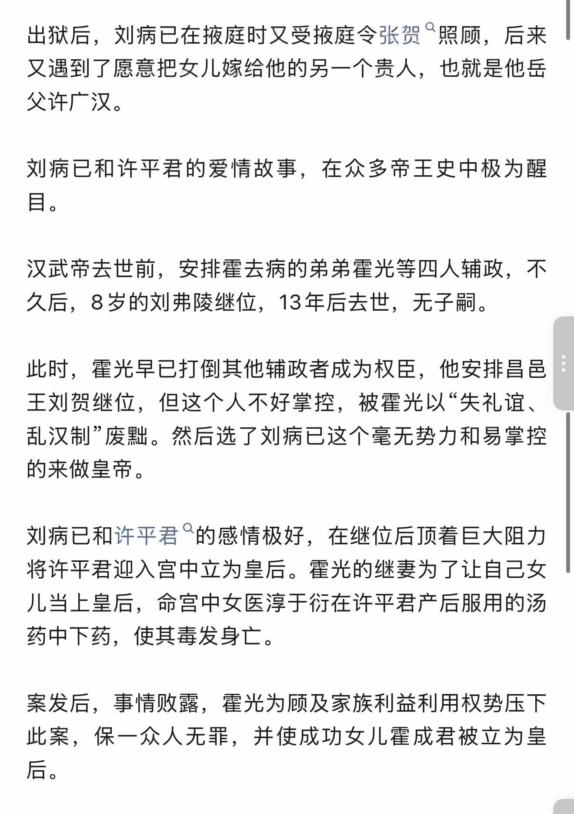
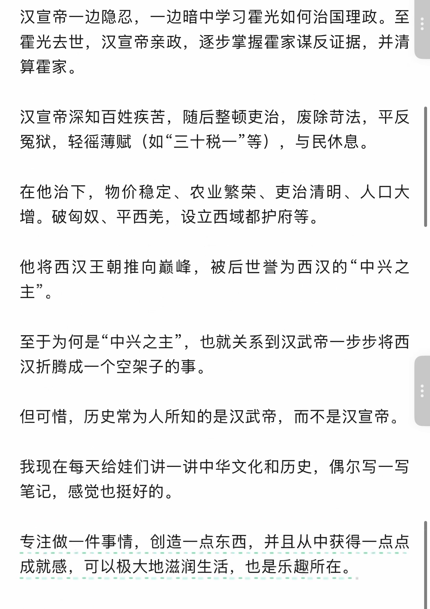
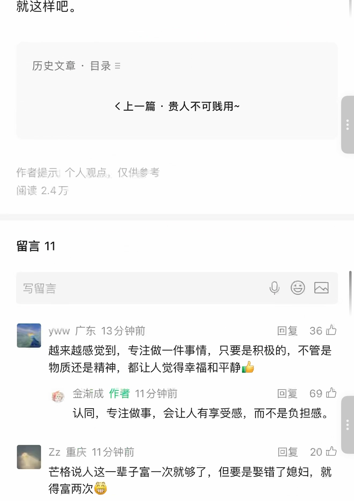
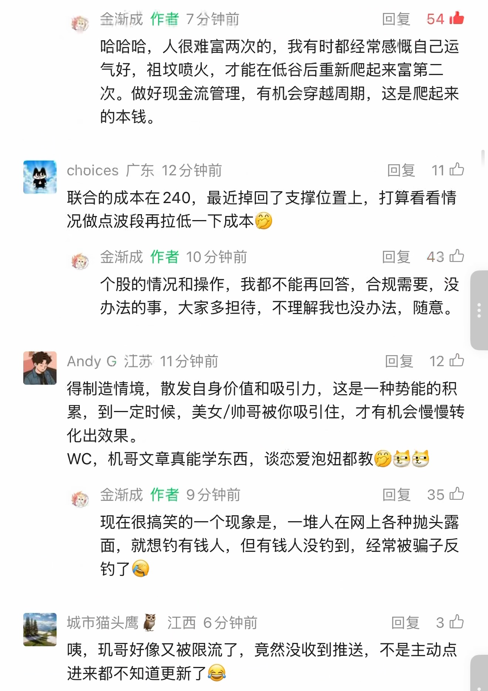
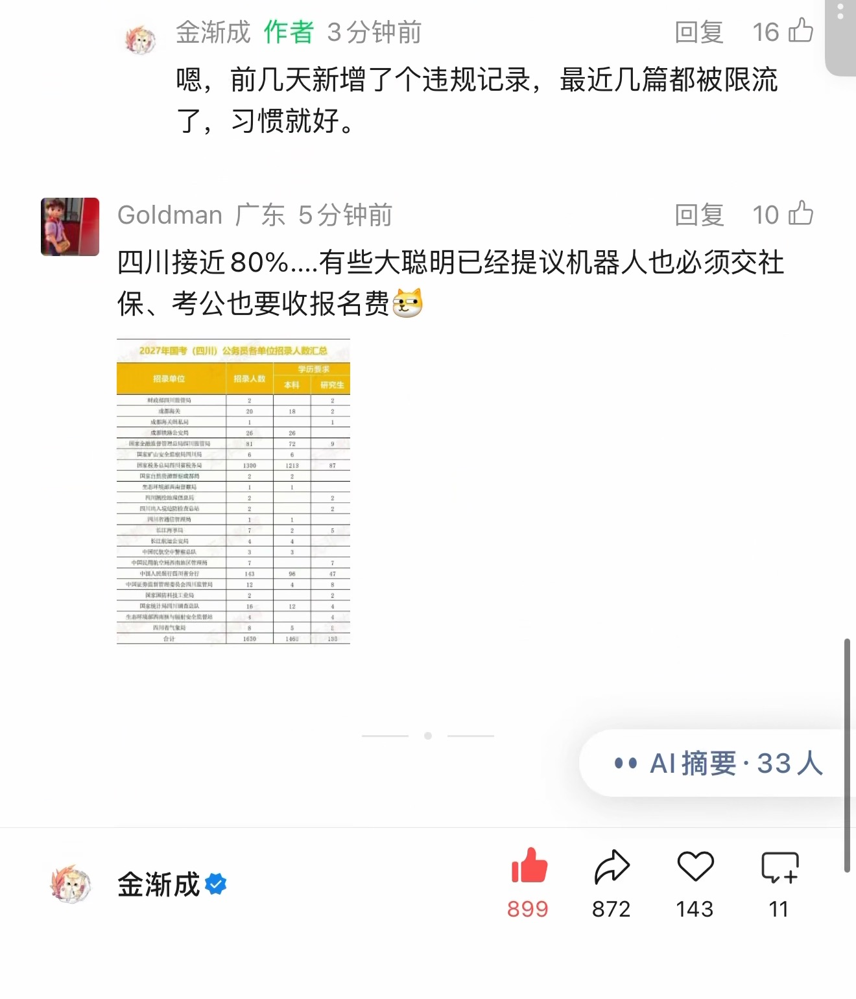

一生只需富一次~
识别文字连续阅读 · 原图附后
原始 PDF 不公开，本页展示捕获页面的截图。 识别文字按页序连续显示，全部原始截图附在文末，便于对照。文字由视觉转录整理，尚未经人工逐字核对，可能存在错字、漏字、漏行、顺序或断行错误。留言与作者回复仅限截图中可见的内容，不代表完整线上留言，也未据此推断留言总数。
OCR 识别提示（待核对）
- OCR/视觉转录文字，尚未逐字校对；可能错字、漏字、漏行，数字、姓名、表情、标点及断行也可能有误，请以截图为准。
- 这里只保留 PDF 已截到的正文、留言和作者回复；截图以外的留言不在此存档中。
- 未从截图推断留言总数或回复关系；手机界面文字也可能混入 OCR。
- 方括号中的表情说明是转录注释，原始表情请对照截图。
- 页面边界仅露出少量字形的重复行归到文字主体可见的相邻页；不推断缺失内容。
识别文字
文字按截图页序整理；页边重复行仅保留一次，原始 PDF 不公开。方括号中的表情说明为转录注释。
第 1 页对照原图
一生只需富一次~
原创 天玑 金渐成 2026年10月19日 10:35 美国
美股大跌。
纳指和标普500都在创新高后回落，这次下跌主要是市场对AI盈利模式单一、盈利不如预期的担忧。
科技板块因此大跌，资金从科技板块流出，转向消费和医药等板块。
七巨头普遍跌幅在1.4–3.7%，博通、甲骨文、AMD跌幅普遍在4–5.95%...
现在的市场，往往科技股大涨时，伯克希尔、美债、消费、医药等板块的资金被虹吸流出，价格下跌；科技板块下跌时，资金反过来流入这些板块。
第 2 页对照原图
苹果算科技板块中略带有防守性质的，因此其他个股大跌时，苹果有时会走出不一样的趋势。
我个人的习惯是带着防守去进攻，操作体系中这个特征很明显。垫高、增厚防守板块，同时将进取型板块的持仓做成低成本/负成本。
这适用于我个人，资金体量增大后，首先考虑的不再是创富，而是守富，因此防守被摆在前列。
看过去百年的商业历史，就是一部浮沉史，绝大多数人的财富，靠时代红利、风口、运气、高杠杆搏出来。擅长在顺境中进攻和扩张，把财富滚大，却不会防守。
财富的上限主要靠进攻，但财富的底线主要还是要靠防守。
防守的核心，是控风险、稳本金、在抗通胀的过程中穿越不同周期，核心目标就三点:稳、慢、不犯错。
人想要赚钱，目标不能是钱，而应该是选到好的资产和机会，等它主动给你创造财富。
就像看上一个美女/帅哥，不能一上去就问能否亲热，
第 3 页对照原图
会被认为是流氓。得制造情境，散发自身价值和吸引力，这是一种势能的积累，到一定时候，美女/帅哥被你吸引住，才有机会慢慢转化出效果。
日经225近期也下跌不少，跌幅合计已超10%，目前还没有什么吸引力，我观望为主，后面再看是否要加。
今年已公开的国考招聘人数约3.57万人，其中税务岗相关的约2.4万人，占比67%+，和过去几年一样，占比都在60–70%左右。
目前全国大部分地区都是金四的外壳，金三的内核，只有浙江等少数地区迈入金四阶段。金四覆盖下，各种数据相比以往就很容易被发现，并亮红灯。
过去几年，监狱也在扩建。税务+监狱这两点过去几年我写过几次，这些天找一省律协的人了解这几年的一些数据，发现这些年各类经济犯罪的增幅大。
只能说，都尽量合规去经营，合规是最大的成本，但也是最重要的。要都像以前一样还很粗放经营，不注重合规，按照这趋势以后进看守所还要找关系，坐牢还要排队，那就太麻烦了。
第 4 页对照原图
合规就是企业经营中最大的防守，和投资一样，风控、防守是排在第一位的。
一生只需富一次，但富了以后就不要再掉下去，不然东山再起的概率超级低，时代和环境不一样了。
... ...
最近也在了解湾区学中文的机构和教师，想着以后两个小娃有个好的地方学中文。
提前了解，以后再决定要不要自己教。
以前在国内，让孩子们努力学习英语，是希望将来能出来；现在出来了，教孩子学习中文，是为了让孩子记住，知道自己从哪来，根在哪里。
这些年，我的想法还是有一些转变的。
以前觉得，给孩子做好物质兜底后，再培养他们赚钱的能力，非常重要。
大概是去年，我开始觉得财富代际传承并不是简单的钱留给后人，而是教他们在财富面前选择做怎样的人，是让自己配得上财富，本质上是价值观的延续。
第 5 页对照原图
对，是价值观。我这些年言传身教给他们的，更多是偏价值观层面的。
有时会有点感慨:教育的残缺，需要几代人来承受代价；完整的教育，也需要几代人来耕耘。
我们总以为教育，是成绩，是听话，是不出错。但其实真正决定一个人底色的，并不是顺境里的表现，而是混乱来临时，依然站立得住、有条理、能应对自如。
昨天老三问我，最喜欢汉王朝的哪位帝王？
我说是汉宣帝刘询，也就是刘病已。他是汉武帝的曾孙，他爷爷刘据曾是汉武帝时期的太子，后来因“巫蛊之祸”，全家被下狱、问斩。
刘病已在监狱中出生，并在监狱中长大，他在监狱中遇到了他的大贵人廷尉监邴吉。
邴吉见他常生病，给他起名刘病已；还挑选了女囚胡组、郭征卿担任抚养刘病已的职责；并在汉武帝听信“狱中有天子气”传言时，冒死保住刘病已；又帮助他在后来大赦后出狱。
第 6 页对照原图
出狱后，刘病已在掖庭时又受掖庭令张贺照顾，后来又遇到了愿意把女儿嫁给他的另一个贵人，也就是他岳父许广汉。
刘病已和许平君的爱情故事，在众多帝王史中极为醒目。
汉武帝去世前，安排霍去病的弟弟霍光等四人辅政，不久后，8岁的刘弗陵继位，13年后去世，无子嗣。
此时，霍光早已打倒其他辅政者成为权臣，他安排昌邑王刘贺继位，但这个人不好掌控，被霍光以“失礼谊、乱汉制”废黜。然后选了刘病已这个毫无势力和易掌控的来做皇帝。
刘病已和许平君的感情极好，在继位后顶着巨大阻力将许平君迎入宫中立为皇后。霍光的继妻为了让自己女儿当上皇后，命宫中女医淳于衍在许平君产后服用的汤药中下药，使其毒发身亡。
案发后，事情败露，霍光为顾及家族利益利用权势压下此案，保一众人无罪，并使成功女儿霍成君被立为皇后。
第 7 页对照原图
汉宣帝一边隐忍，一边暗中学习霍光如何治国理政。至霍光去世，汉宣帝亲政，逐步掌握霍家谋反证据，并清算霍家。
汉宣帝深知百姓疾苦，随后整顿吏治，废除苛法，平反冤狱，轻徭薄赋（如“三十税一”等），与民休息。
在他治下，物价稳定、农业繁荣、吏治清明、人口大增。破匈奴、平西羌，设立西域都护府等。
他将西汉王朝推向巅峰，被后世誉为西汉的“中兴之主”。
至于为何是“中兴之主”，也就关系到汉武帝一步步将西汉折腾成一个空架子的事。
但可惜，历史常为人所知的是汉武帝，而不是汉宣帝。
我现在每天给娃们讲一讲中华文化和历史，偶尔写一写笔记，感觉也挺好的。
专注做一件事情，创造一点东西，并且从中获得一点点成就感，可以极大地滋润生活，也是乐趣所在。
第 8 页对照原图
就这样吧。
历史文章 · 目录
上一篇 · 贵人不可贱用~
作者提示：个人观点，仅供参考
阅读 2.4万
留言 11
yww 广东 13分钟前 [赞36]
越来越感觉到，专注做一件事情，只要是积极的，不管是物质还是精神，都让人觉得幸福和平静👍
金渐成 作者 11分钟前 [赞69]
认同，专注做事，会让人有享受感，而不是负担感。
Zz 重庆 11分钟前 [赞20]
芒格说人这一辈子富一次就够了，但要是娶错了媳妇，就得富两次[呲牙]
第 9 页对照原图
金渐成 作者 7分钟前 [赞54]
哈哈哈，人很难富两次的，我有时都经常感慨自己运气好，祖坟喷火，才能在低谷后重新爬起来富第二次。做好现金流管理，有机会穿越周期，这是爬起来的本钱。
choices 广东 12分钟前 [赞11]
联合的成本在240，最近掉回了支撑位置上，打算看看情况做点波段再拉低一下成本[表情]
金渐成 作者 10分钟前 [赞43]
个股的情况和操作，我都不能再回答，合规需要，没办法的事，大家多担待，不理解我也没办法，随意。
Andy G 江苏 11分钟前 [赞12]
得制造情境，散发自身价值和吸引力，这是一种势能的积累，到一定时候，美女/帅哥被你吸引住，才有机会慢慢转化出效果。
WC，机哥文章真能学东西，谈恋爱泡妞都教[表情][狗头][狗头]
金渐成 作者 9分钟前 [赞35]
现在很搞笑的一个现象是，一堆人在网上各种抛头露面，就想钓有钱人，但有钱人没钓到，经常被骗子反钓了[捂脸]
城市猫头鹰 🦉 江西 6分钟前 [赞3]
咦，玑哥好像又被限流了，竟然没收到推送，不是主动点进来都不知道更新了😂
第 10 页对照原图
金渐成 作者 3分钟前 [赞16]
嗯，前几天新增了个违规记录，最近几篇都被限流了，习惯就好。
Goldman 广东 5分钟前 [赞10]
四川接近80%....有些大聪明已经提议机器人也必须交社保、考公也要收报名费[狗头]
[附图：2027年国考（四川）公务员各种岗位招录人数汇总。小字表格保留于原图，未转录。]
原始图片 · 10 页
第 1 页 · 原始截图


第 2 页 · 原始截图


第 3 页 · 原始截图


第 4 页 · 原始截图


第 5 页 · 原始截图


第 6 页 · 原始截图


第 7 页 · 原始截图


第 8 页 · 原始截图


第 9 页 · 原始截图


第 10 页 · 原始截图


按日期浏览全部来源（同日按条目标识排序）
回到页首